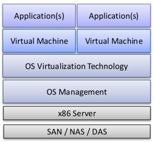
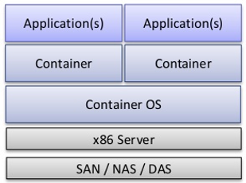
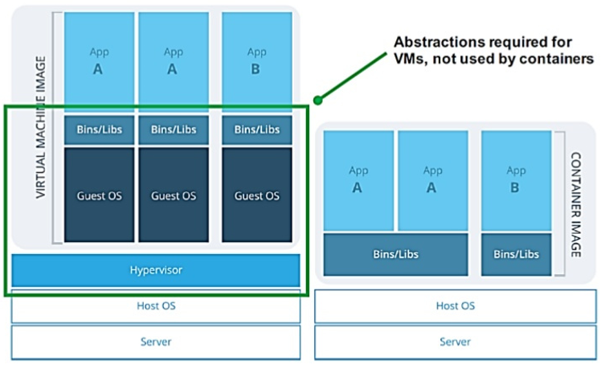
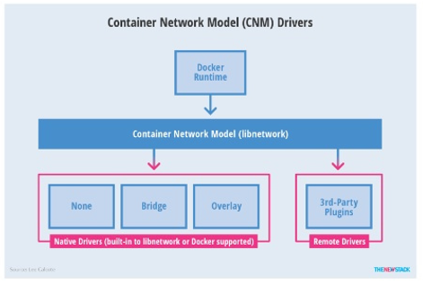
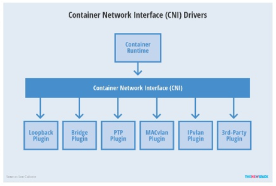
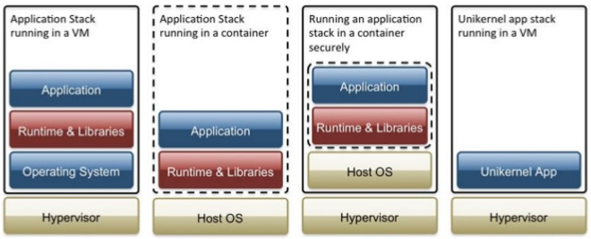
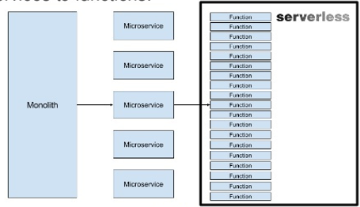

昨天看到AWS STEP FUNCTIONS支持嵌套的工作流
，当时就被震惊了。 AWS早些年推出SWF框架提供工作流服务，
后来工作流服务就没有大的工作，SWF框架的核心开发者一部分
离职去了UBER开发Cadence。没想到沉寂了多年的AWS会在STEP FUNCTIONS
支持工作流，看来这个千亿规模的市场又快被颠覆了。
20多年来，工作流都是超大型企业的配置专利，而STEP function的推出
可以预计，高大上的工作流服务会很快走进很多中小企业工作台并被普及应用。
回顾一下自己的工作历史：
从以前的数据中心服务器SA(2006), 到虚拟主机ESX，
再到OPENSTACK(2010)搭建混合云，
然后利用K8S(2014)搭建PaaS，现在SERVERLESS,
计算架构正在发生快速的演进。本文梳理了算力演进历史和未来
内容
从虚拟主机到容器
从容器到unikernel
函数计算的蓬勃发展
什么是虚拟计算

hypervisor分类
- Type-1 裸机
KVM, QEMU, VMWare, Virtualbox
- Type-2 托管
XenServer， Hyper-v， KVM, ESX, Xen
虚拟机的问题
- 贵
一台云主机(8G/4Core/500MBps)在2017年的超过6000元/年
- 操作慢
一个普通的镜像在2G左右，再加上JAVA应用，一个镜像需要10G.
启动，备份非常不便。
容器计算

|虚拟机| 容器 |:—|:—|:—| 构件| 完整的操作系统和应用| 微内核和应用 虚拟技术| 硬件虚拟化| 操作系统虚拟化

容器计算带来什么好处
- 容器镜像小
alpine的容量是2M
- 容器占用的硬件资源更少
一台PC可以启动上百个容器
- 容器启动快
一般几毫秒可以启动
- 容器不用备份
容器创建只需要一个Dockerfile，容器镜像是只读镜像
- 容器和微服务器架构，DevOps, CI/CD天然融合
容器存在的问题
- 安全
容器共享操作系统内核，具体较低的隔离级别，
如果内核出问题，其他的容器也会处于风险之中
- 网络
如何在足够的隔离级别和复杂的高效网络连接权衡
容器编排
K8S
EKS
SWARM
MARATHON
MAGNM
FLEET
用户轻松在计算集群里面部署，管理，扩展基于容器的应用而
不用关心容器和服务器的绑定，系统扩容等问题
容器网络
- CNM
DOCKER规范，libnetwork实现
内置的驱动包括none, host, bridge , overlay, MACvlan
$ docker network ls
NAME DRIVER SCOPE
68343147e103 bridge bridge local
5d7df1d8f633 docker_default bridge local
d3990aab14a9 host host local
fe4ec77439f4 none null local

- CNI
COREOS规范，被K8S, MESOS, CLOUD Foundry采用
json格式的网络模式定义

docker的核心组件
LXC
AUFS
DOCKER的优势
镜像不可修改
部署没有第三方依赖
注册器简单且容易扩展
容易回滚
对DOCKER的误解：
如果学习了docker就不必学其他的系统知识了
每个容器只能有一个进程
用容器了就不必使用其他的配置管理工具了
必须使用容器才能达到高效敏捷和一致性状态优势
Open Containers Initiative

UniKernel

函数计算的兴起
No server is easier to manage than no-server
背景：
- 前端技术演进
- 强大的原生客户/移动客户端让开发者通过调用各种云服务
编写大规模互联网应用，替换传统的后台服务
- HTTP/S应用接口及基于token的安全认证成为工业标准
- 后台的定制化开发
基于云服务器定制开发
ServerLess VS PaaS
PasS可能是ServerLess的一个迭代


总结
虚拟机是一种更成熟的技术，更安全
容器虚拟化是一个更适合微服务器架构的方案
虚拟机和容器并不是互斥而是互补
函数计算是一下个…